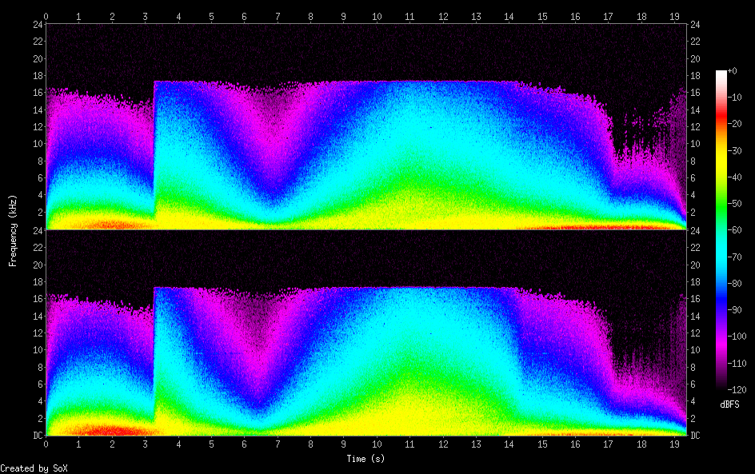

Ocean
/nature/ocean/ocean.rb
with_fx :reverb, mix: 0.5 do
5.times do
s = synth [:bnoise, :cnoise, :gnoise].choose, amp: rrand(0.5, 1.5), attack: rrand(0, 4), sustain: rrand(0, 2), release: rrand(1, 5), cutoff_slide: rrand(0, 5), cutoff: rrand(60, 100), pan: rrand(-1, 1), pan_slide: rrand(1, 5), amp: rrand(0.5, 1)
control s, pan: rrand(-1, 1), cutoff: rrand(60, 110)
sleep rrand(2, 4)
end
end
{
"samples_read": 1855816.0,
"length": 19.331417,
"scaled_by": 2147483647.0,
"maximum_amplitude": 0.694977,
"minimum_amplitude": -0.817963,
"midline_amplitude": -0.061493,
"mean_norm": 0.050826,
"mean_amplitude": 0.000006,
"rms_amplitude": 0.081866,
"maximum_delta": 0.440979,
"minimum_delta": 0.0,
"mean_delta": 0.042215,
"rms_delta": 0.064558,
"rough_frequency": 6024.0,
"volume_adjustment": 1.223
}